我的佛曲圣乐传奇
冯冯
写在拙作七曲佛曲
圣乐音带发行抛砖引玉之前
迷失在未来. / .誊录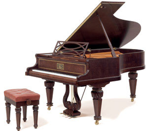
一九八八年二月十七日，农历春节初一日上午，收到天华出版公司来信，告知已代我向内政部申请拙作佛教圣歌七曲中六首著作版权已蒙批准。看到了拙曲的著作版权证明书和天华公司李云鹏董事长的详函，知道天华公司决定即将发行这些拙曲的录音卡带，我这真是悲喜交集！收到此函之时，正逢农历龙年的年初一，是夜，很多人来寒舍佛堂拜佛及贺岁，我将喜讯向大众宣布，大家都鼓掌欢呼，而我自己，也禁不住微笑着，眼泪都已悄悄溢流在面颊上了。
多年来的素愿，要写作佛教的圣乐合唱交响乐新曲，经历了无数的挫折打击，直到现在，才开始获得发表的机缘，怎不令我百感交集呢！
我是一个失学的人，没有学过文学，更没有机会进学府修学音乐。我写的长篇小说，从第一部的“微曦”，到最近数年出版的“空虚的云”，都是以内心的感受及最简单的口语写成的，毫无文学技巧，小说也没写好，怎么忽然又放下它，来写佛教音乐呢？一个本来连五线谱都不会看的人，唱起歌来，五音不全，荒腔走调，怎么写起交响乐大合唱来了？
记得小时候在小学中学我最差劲的课目，就是作文与唱歌，作文总是被老师责骂为“不通”，或“毫无思想”，难得一次六十分，往往都是五十多分。音乐科考唱歌，也很少及格。我的音乐程度差到连简谱都不会看，拍子与音调都弄不清楚，总是挨老师嘲骂得抬不起头来，以致我常常逃学，不敢上音乐课，宁愿跑到田野中去徘徊，或者到山边果园去偷吃番石榴。
说到逃课，就不光是音乐课了。我的数理化成绩都极低，十分、二十分就算是差强人意的了。我最怕的就是数学，老师又凶，我只好逃课。常常会躲到房顶上去，学校有一座小房子，是空置的，房顶上有一处窗户，爬出去是三面房顶交接的谷地，除我之外，没有人知道这个僻静所在。我躲在那上面，老师和校监都看不见，不怕被抓，我可以很安全地躲着睡觉，或者静坐着念佛。
数学不及格，理化交白卷的我，后来竟会写出“太空科学核子物理学与佛理的印证”二十一篇文章来，这是连我自己也意料不到的。
既然自承了那么多逃学的丑态，也不能隐瞒着别的了，实在说，我的英文也不行，这一科也是逃学的。大概我躲在屋顶上谷地的时间，占了每天的大部分时间。除非是下雨天，那可没法子不乖乖地留在教室听课了。母亲对我怎么管教，都不生效。我亦然是喜欢逃学，逃到屋顶去躲着打坐念佛，我也不会念什么，就光会念“观世音菩萨”圣号，我无时不心念观音菩萨，衪成为我唯一的依靠。
美术科则是我的心爱课目，从不逃课，我最爱自由写生，我喜欢画大自然的景色，山水、河溪、树木，不喜欢画静物，一瓶花，几只香蕉之类，最不喜欢石膏像。郊外写生是最大的乐趣，我画完了，总得又画一张有观音菩萨像的山水画。如果要我画普通人物，我就把人家的内脏、肠子、骨骼都画出来。我的美术作品，经常贴堂，每期得奖，全校第一，美术老师很宠我，许我为天才，说我长大了必定成为大画家。
可是，美术老师看走了眼，我长大以后，非但没有成为画家，还全部放弃了绘画！而且对美术失去了兴趣，老师期许的天才，只余下一场天才梦而已。
我发现自己毫无天才，幼时与少年时代的绘画，只不过是涂鸦吧！中断的学业，艰辛的谋生挣扎，早已把那一点点美术与兴趣消磨殆尽。画具颜料那么昂贵，怎能负担？还不如先谋衣食与奉养母亲温饱吧！何况，看到别人的绘画，我就自惭形秽！我于是放弃了我的绘画“天才梦”。
“打工仔”下了班，以阅读遣愁，渐渐走上笔耕之途，又渐渐自修英语与其他外文，作为吸收新知识的途径，倒没有深入研究，所以并没有成为语文学者。因我生来就信佛，自然也就倾向佛学的研读，限于天资鲁钝，悟性不高，至今也没能大彻大悟地成为佛学佛理学者，始终只是在基本浅近的佛理上面学习与实践而已。写佛教随笔与佛教小说，只不过是阐扬佛理，初步接引初机。
近年来，由于外文阅读能力，而直接接触了不少尖端科学资料，以之与佛理比较，发现原来浩瀚的佛学真理，竟是先知先觉的尖端科学！更是新科学尖端的尖端！于是不自量力地写了太空科学核子物理学与佛理的印证论文多篇。从首辑（已由天华出版成书）二十一篇之后，现时仍在循此方向探讨之中（拙作全部都刊在内明月刊）。
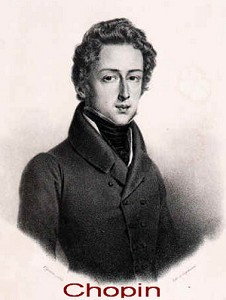 虽然幼时音乐不及格，我却在十多岁就开始喜爱音乐，但绝不是学校老师教唱的八股歌曲。我喜欢的是平剧与粤曲，也喜欢越剧与豫剧，还有潮州戏，收音机节目中播放的，都使我着迷。从地方戏曲踏上了轻音乐，然后再迷上了西方的古典音乐。正当同龄的少年，沉迷于摇滚乐与时代曲之时，十六七岁的我，已经沉醉贝多芬、莫札特，更着迷于印象乐派大师狄布西与拉威尔，与民族乐派的林姆斯基阿萨诃夫、莫索斯基、柴可夫斯基、波洛定。自小性格忧郁，免不了有些善感，因此，也喜爱诗意与忧郁的萧邦作品。自感身世，往往反覆倾听他的“别离曲”而唏嘘不胜，等到我有能力购买了旧钢琴之后，每夜自学自弹的都是“别离曲”，不能不被萧邦十七岁时所写的此曲的天才所折服。直到如今，我仍无法将此曲弹奏得正确。这就是天才与庸才的分别。
多年来，我一面写作，一面同时倾听收音机的古典音乐，这是我日常生活的主要节目，也是最大的精神寄托。做旁的事我心不能二用，写文章与听古典音乐于同时，却是我优而为之的事。没有音乐，我就写不出文章来。加拿大广播公司（CBC）从早到深夜，都播放古典音乐，又没有扰人的商业广告，我一笔在手，永忏楼头，窗边灯下，听听古典音乐，写写文章，偶然探头，悠然见北山与海湾，心中念佛，在我而言，这就是最高的享受了。
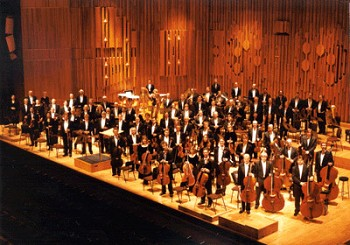 从听音乐踏上自修乐理与作曲，其实并不始于此时。早在二十多年前，十五岁就梦想学音乐作曲，被摒于省立交响乐团门外，被指挥名家拒见，并未使我气馁。十九岁，捧着自修涂鸦之第一首交响乐草稿，被温哥华交响乐团指挥讥为毫无天才不值一看。那一次才是致命伤！我流着悲痛的热泪，在零下二十多度的奇寒，踏着深可没胫的大雪，冒险走过大铁桥，走向归途，那情景如在昨夜，永难忘怀。
打击使我放弃了作曲二十多年之久，我早已失去了音乐的自信，不敢再作曲。我自知绝非天才，可是，我对音乐的热爱未减，我也并未屈服，我深信勤能补拙。我毫无天才，早有定评，但是我肯勤学，我多年来以勤学自修，写出了文学、佛学与科学作品，无论怎么庸劣，也总算是一点涂鸦成绩。虽不能与别人的天才作品相比，但至少已经尽力而为，克服了自我的愚昧与自卑，鼓励了自己。我知道，我仍有重新再学作曲的勇气，我策励自己，我必须重头再学起。于是我用心地分析听到的音乐，我增阅音乐作曲书籍，我在钢琴上研究和声与对位法，我注意电视上的音乐会，从而学习各种乐器特色。唯一没做的是到现场去听音乐会。原因是我当年在音乐会后台被讥笑的记忆犹新。而且，我一向畏惧人多的场所，我只能躲在蜗居内自修。我向来就是一个孤独的人。
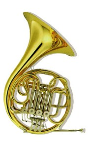 自修的进度很慢，可说根本就是越学越感觉到自己不是作曲的料。可是，一九八五年，我竟鼓起勇气，写下了我第一首佛教歌曲“慈济进行曲”。那是我举行“天眼服务”参加为慈济医院筹募建院基金之时，心中感激，一挥而就的小型军乐式进行曲。我也不知怎么写得那么快，可能是听得苏沙的军乐进行曲太多吧？俗语说：“读熟唐诗三百首，不会吟来也会偷。”听多了苏沙的军乐，“双鹰进行曲”、“陆战队进行曲”什么的，自然也会写写了，我发现我很能写军乐进行曲，于是跟着又写了“佛教青年进行曲”。
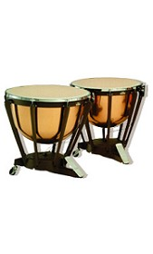 我对于军乐鼓号乐队有很大的兴趣，这是以前所未发现的。一个多愁善感的人，怎么忽然写起雄壮活拨的军乐来了？我自己也不懂，大概是因为看见佛教完全缺少这种音乐吧！是的，我希望佛教有一些进行曲，活活泼泼的，乐观进取的，精神焕发的，由青少年唱出，鼓号乐队奏出，今后我将继续写佛教的军乐进行曲，打算将来出版一卷音带，全是佛教进行曲的。我不明白作曲家们为什么都不写此类进行曲，为什么不带给佛教一点活泼雄壮乐观的新气象新节奏？我心中流出很多军乐进行曲的旋律，如果我有时间，两三天写一首不成问题，最大的问题还是没有时间。
写完上述两曲，我采用了中国古典“水仙花”的旋律，改写为“美丽的水中莲花”。该曲曾被意大利作曲家普齐尼( Puccini )采用，写成“多兰陀公主”( Turandot )歌剧的主题曲。我是从此一歌剧接触到它的。我将它改写为男生女生各四部大合唱，配上竖琴伴奏，这是合唱与轮唱交替形成，已非原曲原形。自感已将原曲提升了美感，而且恢复了中国气氛，不是普齐尼的中西混合调子。我写成八部大合唱，可算是一种冒险的尝试。竖琴是我最爱听的乐器，但并无实际接触，记谱上有很多不懂，写得非常外行，这一直是我自己不满的。
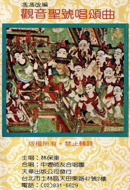 然后，我把传统的“观音菩萨圣号”旋律加上和声，使之成为四部大合唱，并加上了钟鼓三角铁、竖琴等乐器伴奏。我觉得，佛教的传统唱诵，虽然旋律美丽，却显得单调。在寺庙内唱起来，庄严不足，外界人士听来，很难接受，甚至于有人认为是“难听”。此言固然是偏见，但是，佛教唱诵一般均无和声与乐器伴奏，气氛上实在是不及基督教的圣诗圣乐庄严感人，就是中国人也未必人人都能接受佛教唱诵。如果拿到国际去，恐怕更难弘扬。这并非我一个人的感觉，很多中外人士曾经对我说，佛理很深，佛教很好，但是佛教歌曲叫人受不了。听惯了西方音乐的人，很难欣赏中国佛教的唱诵歌曲，最多只限于好奇心而已。因此点感觉，我就着手将传统的“观音菩萨圣号”唱念旋律，加配上四部和声合唱与多种乐器配乐，我将会继续此件工作，把传统唱诵一一配上和声与配乐伴奏，相信会增添原曲的庄严美丽。
不过，伤脑筋的是，传统佛曲，很多是从元代戏曲改编而来的。例如：“炉香赞”的原曲是元曲；“戒定真香”是元曲“挂金锁”演变的；佛曲“八句赞”原是元曲“柳含烟”。元曲的特点之一，就是装饰音与倚音很多，句子内两字之间，有太多的音域变化，过分华丽，因而使佛曲显得不够连贯，不够庄严。唱起来，咿咿哑哑好半天拖泥带水，不像“观音圣号”一曲那么简明干脆，我至今仍不知该如何为这些佛曲配上和声。这是我迄今只配写了一曲的主要原因。
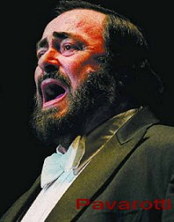 这一点心愿难偿，我只好转向创作佛教圣曲上面去。每年我看见著名全世界的声乐家男高音柏瓦洛蒂( Pavarotti )与天主教的数百人合唱团，在蒙特里尔圣母大教堂演唱“圣母颂”与“哈利路亚”等名曲，我没有一次不感动泪下的。我们佛教的作曲家不少，可是为什么没有人写出那样庄严崇高美丽的圣乐歌曲来呢？我多么希望我们佛教也有可以相埒的圣乐啊！
天主教基督教的圣乐，一曲巴哈与古诺先后合作的“圣母颂”， 舒伯特的“圣母颂” ，或马斯奈的“圣母颂”都可以叫铁石心肠的人感动落泪，心生崇敬之念。“哈利路亚大合唱”，使人不由不生敬信上帝之心，贝多芬第九交响曲的大合唱，更是感人，使人心灵上升。馥里的“镇魂曲”，莫扎特的“镇魂曲”与大弥撒曲，无不使人崇拜敬仰上帝与耶稣。就是通俗的“平安夜”也使人感动启信，心灵净化。
反观我们佛教，尽管佛理深邃如海，戒律森严，但是，我们缺乏那种可以对外演唱的艺术化的圣乐。我们的寺院唱诵走不出寺院，走不进社会，更别想走进国际！我们佛教的歌曲新歌，也难与天主教基督教的圣乐抗衡！这是无可否认的事实。
信佛的音乐教授与作曲家不少，可是，为什么不写出伟大庄严的交响乐大合唱佛曲呢？我推断并不是他们不想做，而是佛教根本向来不重视音乐。作曲家就是写了作品出来，也没有人肯出力支持演奏发表，作曲家们，怎能投下数年光阴去创作毫无希望发表的佛教圣乐？我认为这是主要的原因，而不是中国人没有作曲天才。搞音乐作曲的人本来就清苦者居多，忙于教学或职业都忙不过来了，那有时间去写无人重视的佛曲？就是写，也只能抽暇写一些小品歌曲而已。而且，往往受托的曲词，词义太深奥而缺乏感情，叫作曲家亦难以配乐，只好敷衍地配上小调就算数。
我观察上述的数例天主教名曲，词义都很简单明了，并无高深艰涩的用字，而且歌词都以爱心及感情为主，并不说教。作曲者得以将情感投入，写成感人肺腑的圣乐。
基于这些了解，我感觉到若要写佛教圣乐，亦必须注重歌词简单浅白与感情丰富才可。佛教的大慈大悲，正是最适宜的圣乐题材，大慈大悲又以观音菩萨为最佳的代表。
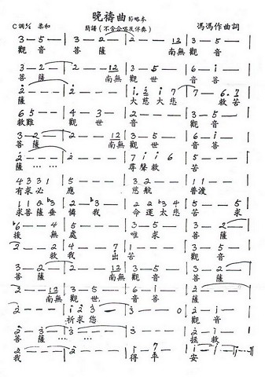 我自幼年时代起，已常在心中念祷观音菩萨，我常在日落黄昏时分，仰望着天边晚霞，祈祷着。那歌声在我心中孕育了多年，我知道那可能是受到挪威民歌旋律的影响而形成。那歌声是挪威作曲加格力克的作品，早已没人唱了，却在我心中酿成了我的“晚祷曲”。那北欧人的音感，可能来自中亚细亚的祖先，而我也是中亚细亚民族的子孙，加上汉化的民族感情，可能这就是“晚祷曲”形成的音感因素吧？我于是写了“晚祷曲”，简单纯朴的主旋律，简单的歌词，但是有无限的崇敬与孺幕，充满感情。此曲最初是写钢琴伴奏的，后来改为管弦乐伴奏。
“晚祷曲”完成之后，我写了“谁来拭干我的悲泪”一曲，灵感的来源是加拿大大西洋与北极洋之间的纽芬兰民歌。彼处的居民是全国最贫穷的，但是他们善歌，往往唱出美丽无比的民歌，醇如陈酒。我在收音机听到很多他们的民歌，记下了不少音谱，其中的一曲，启发了我的灵感，写成了此曲“谁来拭干我的悲泪”。晚祷曲是很艺术化的古典歌曲形式，而这一曲则是很富于通俗民歌的风格，而且很富于中国色彩。（纽芬兰人大多是苏格兰人与爱尔兰后裔，苏格兰民歌很有些中国味道，苏格兰风笛音乐几疑是江西的乡村八音，这是很难明白的，尚待研究。）我的灵感得自纽芬兰，但并非原装搬过来，只是从一小句开始而另行发展的。在配乐方面，初稿是用吉他伴奏，第二次修正时，则改为用竖琴与管弦乐队伴奏，配器手法已较晚祷曲及以前数曲为纯熟了一些。主要的内容是向慈母相观音菩萨祷告，是很富感情的。
此曲之后，我写了“地藏菩萨摩诃萨”一曲，灵感得自美国南方路易斯安那州的民歌旋律，从它的一句而发展成全曲。这是写地藏菩萨地狱救母与度众的慈悲，配乐加入佛钟、佛鼓。在配器方面，是各曲中最成熟的一曲，风格也是很中国化的。
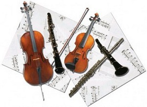 以上后列的三曲，是我作佛曲至今付出最多感情的作品。各曲风格各异，但是都有强烈的中国民族音感。在作曲技巧上、和声与对位法，都是西洋古典音乐的，乐器也是西乐的交响乐队，没有加入中国乐器。我知道大陆的作曲家们很喜欢同时采用中西乐器来演奏曲子。我的感觉是很不调和，听来好像是中乐队与西乐队分别轮奏同一曲子。中西乐器配器是无法调和的，如果能，也很勉强，所以我不敢使用中西乐器混合配器。我或者将来也会写些全由中国乐器伴奏的佛曲，但是，一定不会中西乐器同时配用。我认为，要保持中国民族音感风格，尽可在曲调上用西洋乐器表现，并不一定要运用中国传统乐器。而且，用西洋乐器与作曲技巧，当会使西方听者更容易接受中国民族音感的音乐。佛教圣乐如要走出寺院，走向国际，必须西化、现代化才行。
上文的意思，并非否定传统佛曲梵唱的艺术价值，与伟大贡献，也不是提议用新音乐代替寺院的传统唱诵。相反地，我认为传统梵呗唱诵必须予以珍视保存，否则佛曲就会失去它的独特风格。我只是提议酌加和声与伴奏，以使原曲更加丰富优美。
至于我的创作的佛教歌曲，当然不适宜作拜忏之用，只可作为辅助性质的艺术歌曲音乐。可以在法会正式拜忏唱诵之后，作为补充的唱奏，或在音乐会上演出（传统的梵呗是不适合在音乐会上演出的），亦可让喜爱音乐的青年人平时歌唱，或静修时作为气氛音乐，或者当作古典音乐欣赏，陶冶禅性。
我写作这些佛曲圣乐，先写下主旋律的人声歌谱，修正定稿后，配上四部至八部的和声大合唱谱子，然后才写伴奏配乐。这可是最困难的一部分，因为我从未实际接触过交响乐团，我对于各种乐器的认识，只是从电视与录音带或广播得来的，关于构造与记谱方法，乐器配置，则是从书本上自学的。以这样的外行人，写作整个全部交响乐团乐器的谱子，困难可知，尤其是对于移调乐器，更感棘手。对于各种木管乐器与铜管乐器的有效音域、特色，如何调和，如何避免不和谐的搭配，及刺耳的不协调声音，应在何处让吹奏者休息呼吸换气，对人声合唱的强弱关系……种种问题，都使我感到难以应付。 不说别的，每一页总谱五线谱，就须填写十八行至二十行——顶上的第一组是木管乐器，至少包括长笛、竖笛、低音管等乐器。第二组是铜管乐器，至少须有法国号、英国号、短号、长号等等。第三组是敲击乐器，包括：定音鼓、三角铁、钹、柱形钟琴、佛钟、佛鼓等等。第四组是人声合唱，包括：女声四部、男生四部、合唱或轮唱，一共八部。第五组是竖琴，第六组是弦乐，包括小提琴、中提琴、大提琴、倍低音大提琴……这样合计起来，人声合唱一两句，我就得写二十多行的配乐与和声对位，一天也只能写一页或两页。一首只唱奏五分钟的歌，我须写上六十页至一百页（合计大约有三百多乐句，乘以二十行）还别提修改的功夫。不作曲，不知作曲之困难！看到贝多芬的第九交响曲总谱，长达两千多乐句，印成三十二开本，也有好几百页，真无法想像是怎样写成的。
不说别的，每一页总谱五线谱，就须填写十八行至二十行——顶上的第一组是木管乐器，至少包括长笛、竖笛、低音管等乐器。第二组是铜管乐器，至少须有法国号、英国号、短号、长号等等。第三组是敲击乐器，包括：定音鼓、三角铁、钹、柱形钟琴、佛钟、佛鼓等等。第四组是人声合唱，包括：女声四部、男生四部、合唱或轮唱，一共八部。第五组是竖琴，第六组是弦乐，包括小提琴、中提琴、大提琴、倍低音大提琴……这样合计起来，人声合唱一两句，我就得写二十多行的配乐与和声对位，一天也只能写一页或两页。一首只唱奏五分钟的歌，我须写上六十页至一百页（合计大约有三百多乐句，乘以二十行）还别提修改的功夫。不作曲，不知作曲之困难！看到贝多芬的第九交响曲总谱，长达两千多乐句，印成三十二开本，也有好几百页，真无法想像是怎样写成的。
我为了写佛曲圣乐，已经牺牲了写文章的时间与收入，可是这并不使我烦恼，因为我已许下了心愿，一定要写作佛教圣乐，这是我的愿心。我自知是不自量力，但是，外界大音乐家们不肯为佛教写圣乐，信佛的作曲家们没有时间写，我这个不懂音乐的人只好硬着头皮来写啦！我深受佛恩，尤其是深受观音菩萨加持之恩，我首先就要写作一系列的有关观音菩萨大慈大悲的圣乐！
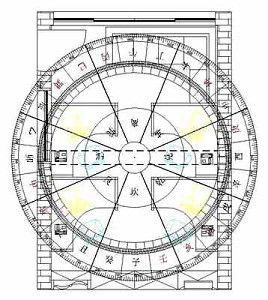 最使我烦恼的，是外缘的干扰！我作曲比写文章更怕受到干扰。每天，我刚拿起笔要写曲，电话铃就响了，就有人打电话来问这问那的。一会儿，门铃又响了，都是不速之客，上门来要我看家宅、鬼神、风水、看相、看八字的，来串门子闲聊的，来看猴子似的，逛动物园似的。很多人根本就不懂得尊重他人的工作时间，也不预先约好，随时爱来就来，无论我在门上张贴了“工作时间，请勿打扰”或“如无预约，恕不接见”，他们也相应不理，照样打门。有的人说：“我只占你半小时，不会妨碍你工作的。”殊不知我写曲作文都不能忍受任何打扰，一分钟也不行。被打断了，我这一天就很难再写作下去了。还有，每晨收到世界各地的来信，多达三、四十封至五、六十封，回信也占尽了我的写作时间，我已经登报三个月声明不再回信了，可是现在也还是有很多人写信来。有些人说：“我知道你不愿回信，但是我的情形特殊，请你一定要回信给我。”有些人干脆就开骂：“你不回信，算是什么佛教徒呢？”“你吃佛教饭，怎可不服务？”“你有什么了不起？搭什么臭架子？”这些人从来也不替别人着想一下，只想到他自己。还有，打电话来用下流粗话侮辱我的。甚至有上门来，却先伪装恭敬，进了门坐下就痛骂我一顿的。受虚名之累，真是难以细述！我倒不气，只是被扰得永无宁日，无法写作佛教圣乐，是最大的烦恼。我已经在考虑迁居到隐秘的地方去了。现在我才明白，为什么许多大乘佛教的大德也渐渐退隐山中！众生实在是不容易应付的啊！
我作佛教圣乐歌曲的挫折，还不止于此。当我开始发表拙作于香港内明月刊之后，很快就收到保守人士的抨击。他们认为我企图要废除传统佛曲梵呗，有些则认为佛曲不应现代化，有些则抨击我作曲欠佳，亦有反对月刊发表我的曲子的。善意的启示，我当然一一接受，指出拙曲乐理缺点的，我也都一一改正，但是我对于恶意或褊狭心理的抨击，我是一概置之不理的。
曲谱有三首给“内明”发表了，可是，一直得不到任何人演唱。我自己是没有歌唱嗓子的（奇怪？骂人的嗓子倒有，声大夹巴闭，唱歌就唱不出声音来），我亦不能自弹钢琴伴奏。找了几位声乐家，他们都推说太忙，忙也是事实，但恐怕也有些瞧不起我这无名作曲者的作品吧？名声乐家自然是不屑唱无名作品的了。版注：粤语“巴闭”，就是神气、了不起的意思。
我没法可想，只好祈求观音菩萨。我求衪差遣一位声乐家来帮助我，我祈求衪叫有善心的人士资助这些圣乐曲子正式演唱及录音。我知道菩萨一向是有求必应的，但是我也自知这一切的祈求是太过分了，我不敢期望有何奇迹出现。
可是，观音菩萨的灵感真是不可思议！
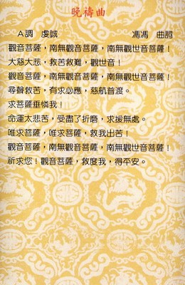 一九八六年夏天，台湾桃园金兰食品公司范文正先生偕同女公子等一行，赴阿拉斯加旅行，专程来温哥华访我。范文正先生是一九八五年响应我的“天眼服务”筹募慈济医院建院基金而认识我的，他乐捐了钜款给慈济医院，并与我成为笔友。年已七旬的范老伯，不远万里来访，令我十分感动。我下厨洁治素菜款待他全家，饭后，我正在洗碗，忽听客厅传出了拙作“晚祷曲”大合唱之声，使我惊喜不置。我放下了碗，身上还挂着围裙，就跑出去听，原来是范老伯的女公子看到“内明月刊”上的拙曲，就与父亲发心找人为我演唱录音的。范老伯要给我一个惊喜，并不预告，他飞越了太平洋，亲自带来这份音乐带送给我。
这份礼物真是太贵重了！我这是第一次听到自己的佛曲圣乐大合唱，我感动得说不出话来，尤其是，听到后面的男高音独唱，那么富于感情虔诚！那么庄严！那么美！我的泪水就再也忍不住了！我真梦想不到有人能把我的不成熟的曲子唱得那么感人！
“这是谁？唱得那么好？”我问。
“他叫林保奎！”范老伯微笑回答：“是一位小学教师，今年才三十多岁！是我女儿发现他，请他唱你的歌的！你听他唱得怎么样？”
“太好了！太好了！”我由衷地赞美：“他完全能表达出我作曲的感情！”
原来合唱的男女青年，都是林保奎老师的同事或友人，他们都唱得好，美中不足的是有人使用了木鱼，这并非我原作原意，在座贵宾也有人同意我的“听感”，我说：“此曲不适宜打木鱼。只可用鼓声，我要改写，配上全部交响管弦乐！”
范老伯欣然说：“我们可以请林保奎先生再唱！你改写好了谱子寄来吧！林保奎是一位很纯朴很诚实的好青年，他会愿意再唱您的大作的。”
“那么就请范伯伯您和女公子先代我向林保奎先生致谢了！”我说：“他真是唱得好，这是有声乐训练底子的歌唱家。”
林保奎的歌声很宏亮雄壮，音质极美，而且极富于表情力，刚强中带柔和，非常纯洁，的确是罕见的声乐家。听来比很多职业的歌唱家清新纯正得多，我深深受到了感动，感谢观音菩萨的安排，出现了这么优秀的声乐家来演唱我作的圣歌。
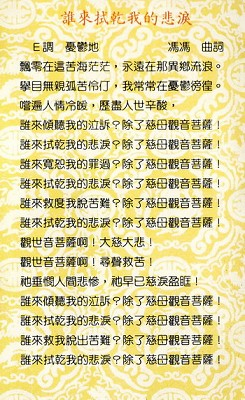 跟着来的一年多，是我最忙碌的时间。我赶着处理出版新着“太空科学核子物理学与佛理的印证”与“天眼慧法法眼的追寻”，还得赶写“空虚的云”的修订本与补充部分，写英文的佛教演讲词文给世界佛教大会在尼泊尔开会致词之用。每天还得应付数十封来信和不速之客，数不清的电话，我实在没有多少时间作曲。上文说的各曲，都是在这样情况之下，抢时间断断续续写成的。作曲比写文章难，而且更需要连贯的工作时间，而我正缺少这种连贯的时间，灵感常被打断，昨天写的，今天看看，都不满意，又得重头再来，不知修改了多少遍？
在这时间的夹缝中，我勉强赶写了上述各曲。我将晚祷曲的原调C调，降低为A调。因为我发现原曲八度E音太高，很难唱。我将全曲改为，先由男高音独唱，竖琴伴奏，然后出现男声女声六部大合唱与全部管弦乐交响伴奏。我将“谁来拭干我的悲泪”的序曲，改为由男声两部合唱，引导进入男女混声六部大合唱，及管弦乐与竖琴伴奏。我后来又写了“地藏菩萨摩诃萨”一曲，较为开放地运用了佛鼓与佛钟伴奏。这三曲，我自己认为是我迄今为止的主要作品。在配器方面，自问已经竭尽所能了，限于学力不够，作曲上，缺点仍是很多的，不过，在感情上，都是极其投入的。写晚祷曲之时，我多次流泪，写“谁来 拭干我的悲泪”一曲之时，写到“观音菩萨啊—大慈大悲—衪悲悯人间悲惨，衪早已慈泪盈眶……”之时，我自己早已泣不可抑，泪滴于乐谱。写“地藏”一曲中：“地藏菩萨摩诃萨—地狱救母，深入无间……救得慈母，永出三涂……”，我亦泪流满颊了。
把曲谱寄给范老伯之后，天华公司委托天华素菜餐厅经理吴浩先生计划为我筹备演唱我作的圣歌。吴浩先生他本人的歌声就很好，但他很客气自谦，要物色一位理想的男高音来唱。他的计划书非常周详，从演唱到录音都有很好的计划；但是我已经拜请范老伯，代我敬请林保奎为我唱录，林保奎亦已着手联系师友，组成“师友合唱团”及小型管弦乐队，每周末练唱。我对林保奎和他的师友，极有信心，我亦应守约。所以我婉谢了吴浩，辜负了他的一番细心筹划。我心中对他是既感谢又欠负的。
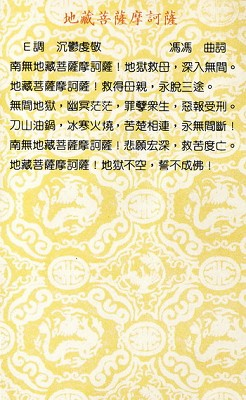 一九八七年圣诞节前十天，我送一年的积蓄加币一千元去本地某大教堂，捐助他们的冬令慈善救济非洲饥民，顺路去买新的空白五线谱。由于一般谱子最多只有十二行，不够我用，因此，我带了另一新作“仰望观音菩萨”的草稿谱子去做样本，想买至少十八行的。没料到在教堂捐款之时，懂音乐的一位高级教士，注意到我的曲谱，好奇的索阅。
“可以看一看吗？”他很有礼地问。
“当然可以！”我回答。
他翻阅曲谱看了十多分钟，很激动地说；“这是我见过最美的乐诗！这是谁写的？”
“我写的。”我不安的说，我不敢相信会有人赞我。
“你是学音乐的？”这位洋人问我。
“不是！只是自修。”
“太美了！我们可以试唱吗？”他说：“我们正在练唱弥撒曲，也许我们可以试一试唱你的歌。”
“当然可以啦！”我惊喜得差点儿没跳起来；“太好了！太好了！可是……”我的心立即沈了下去：“这并不是你们宗教的歌，我写的是佛教的圣歌。”
“佛教的圣歌？”他十分惊愕：“你有那么好的天才，为什么不替我们写？为什么要写佛教圣歌？”
“因为我信仰佛教。”
“这……这就困难了！”他说：“我们不可以唱外教的歌！”“我了解的，”我说“我同样感谢你的过奖！”
“慢一点！”他叫住离开的我：“我想我们可以安排！我相信上头会谅解我这样做，我这是要争取一个天才作曲青年为我们本教作曲……彼得，你能将谱子上的中文音译出来吗？”
我从来没被人称许过是天才，这不过是头一次，何况对方是有地位的外教当局人物呢？何况他要甘冒被上级斥责之险，也要试唱我的乐曲？我不感谢才怪呢！
三天之后，他打电话来叫我立即去大教堂听试唱。我带了我的小小录音机去。到达之时，教堂内已是歌声嘹亮，台上的合唱团正在练唱着莫札特的“镇魂曲”。我看见大约有一百二三十各合唱团员，女的占大多数。台下前面有大约一百人的交响乐团。教堂中有椅子多排，男女分坐，大约有七百人。那位洋人教士主管来迎接我，告诉我这一天只是练唱，堂内的人是来听歌的，并非做弥撒。他叫我不必紧张。
走进人家的大教堂，我鞠躬向圣母像行了礼，这是基本礼貌。我被安置在前排坐下。莫札特的名曲伟大庄严无比，令我感动而自惭形秽，我真是太渺小了！莫札特才是真正的天才呀！
“现在试唱你的圣曲了！”不久，我的东主对我说；“你可以录音，但不能对外流通！你知道，我们本来不应该试唱异教的歌曲，不过，你的曲子很美，很可以用作本教圣歌，我希望争取你为本教作曲。”
“仰望碧空万里！观音菩萨慈光普照！……”洋女合唱出了我的中文英音，完全不准确。但是我听得出来。当女声合唱越长越上升之时，我不由自主的下跪了，我早已泪流满面！这是我写的曲么？不可能！不可能！我记得我一连十多个深夜执笔，好像有一种无形的力量在指挥我的笔写下了此一乐诗。当男声四部出现加入大合唱之时，当弦乐组加入之时，我好像置身在云天之上。到底这是一个庞大的交响乐团，和一个大合唱团。大教堂的音效又好，竟会使歌曲有这样震慑心灵的力量！我感觉到不住上升，心中纯净圣洁无比。是的！这是我们佛教需要的新圣乐！我感谢观音菩萨！我知道断非我这样的庸才所能写出此曲！我知道的！不是我写的！
一曲唱完，全堂寂静，我看见修女们不少在流泪，听众中的妇女很多在流泪，男子汉也有拭泪的。
“这位就是作曲者！”主人介绍我给大众，立即引发了全场起立鼓掌，很多人上前来向我致意，都说没听过这样感人的圣曲！
“你应该改信我们的宗教，”主人说；“你应该为我们写曲！你的曲，是不像佛教的，毋宁说是接近我们的圣乐，但是有很多中国特色。”
“我很感激于你的诚意，”我说；“不过，你们人才很多，并不需要我，我们佛教作曲的人少，我觉得我有义务要为佛教写作圣乐下去！而且，两教本是兄弟姊妹，何必分彼此呢？”
主人提议要向上级建议保送我去圣母大学念书学习作曲，将来为他们作曲。他说：“现在肯写宗教圣乐的人太少了！”
我婉谢了他，不过我说：“假如我有足够的精神时间，我也愿意为你们写一些圣乐。”
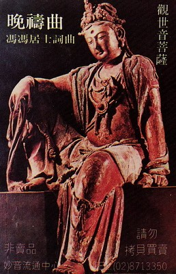 是梦？是幻？但是，我带著录音带回家，我的佛教朋友很多来听了这段录音，远自吉隆坡来的美国外交官总领事夫人苏淑真女士，冒大雨来访，我也开了这段录音给她听，苏女士听了很多次，有很多次，次日再来，再听了多次，大约有十多次，不住地说深受感动。
“什么时候可以正式发行？”她恳切地问我。
“不能发行！”我回答：“因为我必须守约，不能发行，但是，我要寄谱子去台湾，请林保奎和他的师友唱录，那才可以发行。”
这一事件，对我是很大的鼓励，佛教并不重视圣乐，也没有人鼓励我作曲，想不到外教反而鼓励了我。外教风行全世界，得力于圣乐是很大的，可是，我们佛教并不重视圣乐：真令我感慨！现在，幸而有范文正老伯在支持我，也有林保奎和师友们发心，不过，我们的力量也还是很小的，我多么盼望佛教的音乐家们创作圣乐，更盼望佛教人士多提倡圣乐！他们必会比我写得好上千百倍！
苏女士离去之后数天，我收到了范老伯寄来的国际快捷邮包。里面是他写的长函与录音带。他说：林保奎先生和师友合唱团与小型的管弦乐队，他们都是中小学老师，并不是职业音乐人士，他们只有课余公余才有时间练歌，也只有星期日才可以聚集在一起练习，他们有些人住在桃园，有些住在中坜，新竹，还有住在台中和南部的，他们这些男老师和女老师们数十人、不辞劳苦，自付旅费与餐费，从各处赶到桃园大溪来响应林保奎老师，大家一起练唱我作的佛教圣歌，练奏它的伴奏。也真难为了林保奎，又得教学，又得练歌，又得召集师友数十人，又得影印我的曲谱，每一首歌就有从五十页至七八十页不等。每一个合唱者需要一份，每一乐器演奏者也需一份，合计起来，光是影印曲谱就费了了很多时间与支出了。好不容易，他们终于练好了，大批人马，携带着各种乐器，租了巴士，直开台北市，租了录音公司的录音室，唱奏了我的六首佛教圣歌，录了音，然后，大家欢欢喜喜，开队到士林天华素菜餐厅来，举行录音成功庆功宴，范老伯和各人在彼处会见了吴浩先生，告以录音成功的佳音。
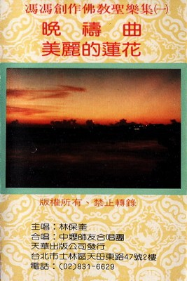 范文正老伯以七旬高龄，不辞劳苦，出钱出力，全力支持此次演唱及录音，还亲身参与筹划及工作，他并且将录音带送给我和天华公司发行，他声明绝不受酬偿，若有，也必捐给慈悲救济之用。林保奎先生与师友合唱团及管弦乐队的朋友们，也都是全部热心义务演唱演奏，并无要求任何酬劳。他们与她们的热忱，真是令我感铭五中，不知如何才可报答范老伯父女与林保奎先生和师友们，唯有深深为他们和她们祝福吧！他们这样发心以纯洁圣善的热忱歌声乐声来布施和弘扬佛教，接引信佛向善，这是多么高贵多么可敬啊！林保奎先生在他回覆我的感谢函之中说，他是为了发善心而唱，并不是为名利。我也一再说过佛教音带不会有很大市场不会赚钱，但是，范老伯与我说过多次，他希望音带能赚一些钱用来捐给慈济。他自己绝不受偿他的支出。范小姐一位名医的夫人，在佐夫教子之余，还不辞劳苦参与唱录，并且时常透过父亲来催我快点作新曲，她热心支持我写圣乐，真令我感激无已，发现了林保奎这位天才声乐家，更是她的功劳，她首先提倡演唱我的圣歌，就更是她的慧眼独具与慈悲心怀了。假如不是她发心，假如不是她向父亲提议支持，哪有今天的录音带问世呢？我的作曲，也许仍是无人过问哪！我真感谢范小姐。我怀念她当日随范老伯来访时带来她的四岁小儿子，胖嘟嘟的，可爱极了，我问小男孩：“阿拉斯加好不好玩？”他说；“不好玩！还是台湾好玩！”又说他想念哥哥，“他要回家”。多么聪明可爱！
我怎么样也感谢不尽范老伯父女与林保奎和他的师友们，我感谢他们全体的支持与鼓励，我深深为他们祈祷祝福，并且，我会更加努力去创作新的佛教圣乐圣歌！林保奎此次唱录的七曲，在舍下试听的百余人很多人都感泣下跪合掌。
我也必须感谢观音菩萨的慈悲加被，倘若不是观音菩萨的特别加持及安排，又怎么会有上述的许多奇迹出现呢？我不是一个音乐家，更不是作曲天才，我的作曲，早在二十多年前就被人斥责毫无天才不值一顾，二十多年来，都没有机会发表我的音乐，可是，这两年来，竟然有上述的种种奇遇，使我的作曲终于能够问世。这不都是得蒙观音菩萨的特别加持么？二十多年前，我写的并不是佛教圣乐，只是一个十九岁男孩模拟古典音乐交响曲的学步之作而已，今天我许下了深愿，要献身佛教圣乐的创作，作品自然也仍是不成熟的，但是，这与当年的动机是全不相同了。我没有天才，但是我深信勤能补拙，必会达成心愿的。
我每晚拜佛之时，向观音菩萨祈求的，您猜是什么？
我每夜祈求地藏菩萨度尽一切亡魂往生。
我每夜都向观音菩萨祈求：请观音菩萨加被苦难众生都得脱苦，请菩萨加持我母健康长寿，亦加持天下的慈母，请求菩萨赐给我以勇气力量才能献身佛教圣乐圣歌创作！我祈求菩萨让我写出妙音来接引众生信佛行善！
是的，这就是我的祈祷。这是我的愿望。
原载《天华》第109期：1988年06月1日
原载《天华》第110期：1988年07月1日
原载《天华》第111期：1988年08月1日
原载《天华》第112期：1988年09月1日
原载《天华》第113期：1988年10月1日
原载《天华》第114期：1988年11月1日
原载《天华》第115期：1988年12月1日
原载《天华》第116期：1989年01月1日